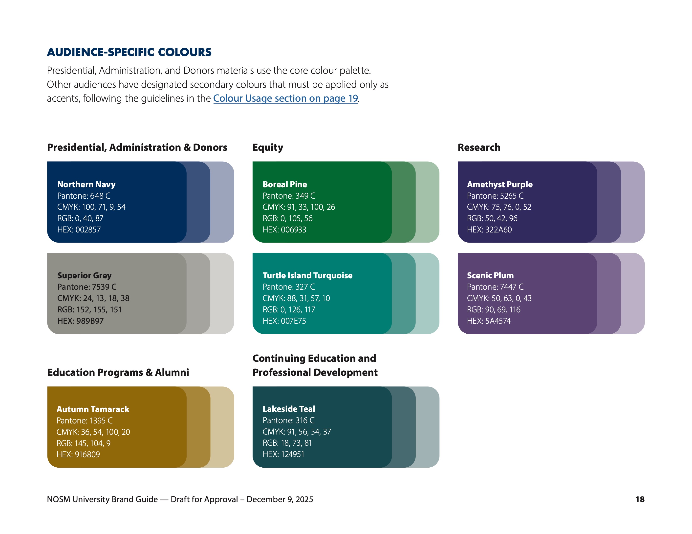
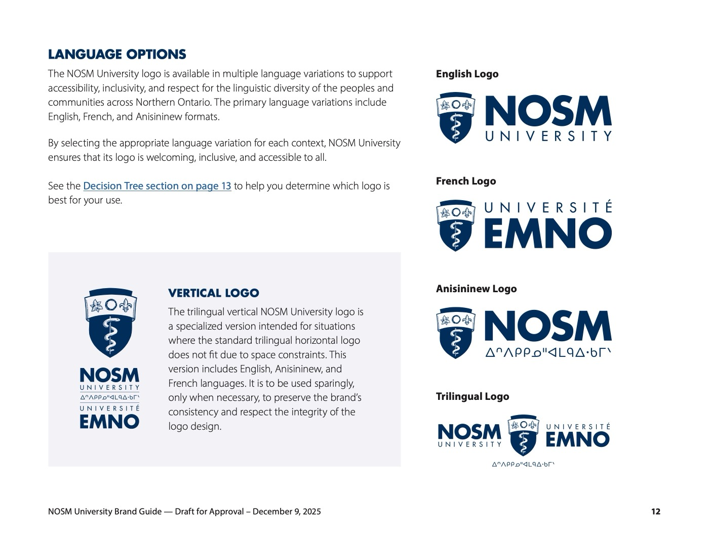
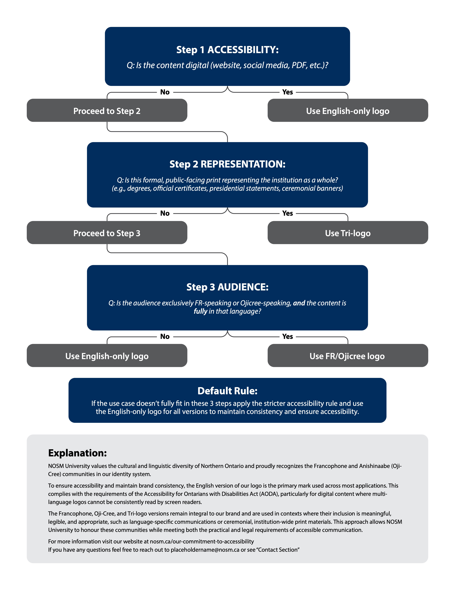
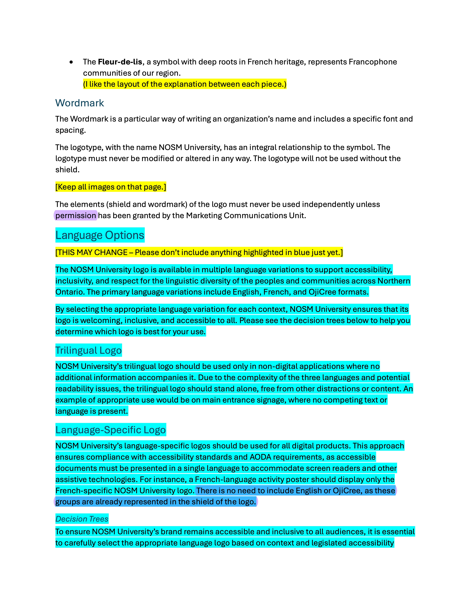

NOSM University Rebrand
Brand governance for Canada's first independent medical university.

NOSM University's brand guide arrived from an external designer with structural problems, factual errors, and no policy for its three-language logo system. I took it from v1.0 to v1.5 — 300+ recommendations across three drafts — writing new sections, building decision frameworks, and presenting brand direction to senior leadership.
300+
recommendations
3+
drafts reviewed
3
logo languages
28
guide pages
The brand guide
I rewrote and rebuilt the guide section by section: new copy for every logo version, an audience-based colour architecture researched against the University of Pittsburgh's model and adapted to NOSM's divisions, accessibility standards with WCAG contrast ratios, and colour names rooted in Northern Ontario.


The logo decision framework
NOSM's logo exists in English, French, and Oji-Cree. Choosing between them is a genuine institutional tension — accessibility law, cultural representation, cost, and symbolism all pull in different directions. I authored a three-step, accessibility-first decision framework, in written and flowchart form, that gives anyone at the university a defensible answer.

Governance & QA
Every recommendation ran through a colour-coded review system: cyan for new copy I wrote, yellow for structural notes, magenta for corrections, green for approvals. Three or more drafts per deliverable, 300+ recommendations in total — covering copy, layout, factual accuracy, and AODA/WCAG compliance.

In production
Corrected logo applications on real product photography — every garment in all three language variants, built in Photoshop to address brand misuse on existing university store items, and handed off as production-ready vendor files.


Outcome
- Brand guide v1.5 adopted as the university's working standard
- 300+ recommendations across three drafts — copy, layout, factual accuracy, accessibility
- A multilingual logo policy balancing AODA compliance with cultural representation
Looking for a designer who works across brand identity, print, and digital? Let's talk.
Get in touch